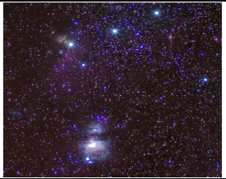
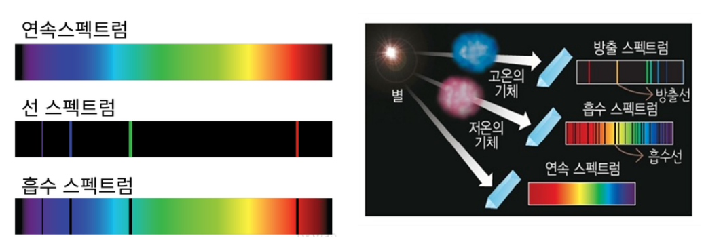
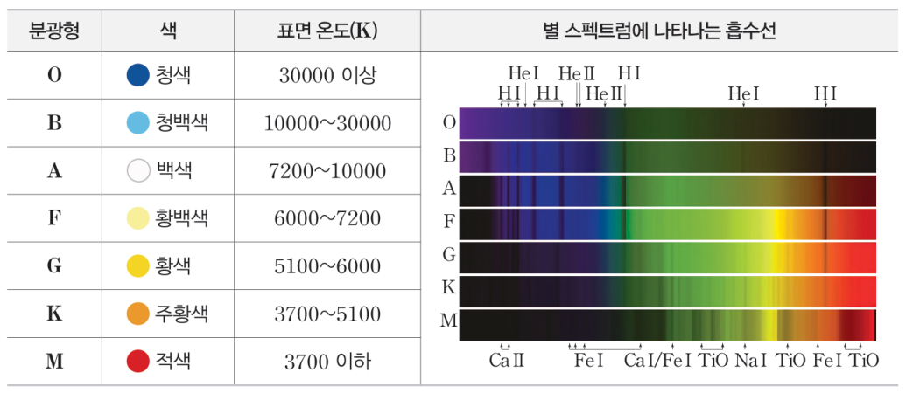
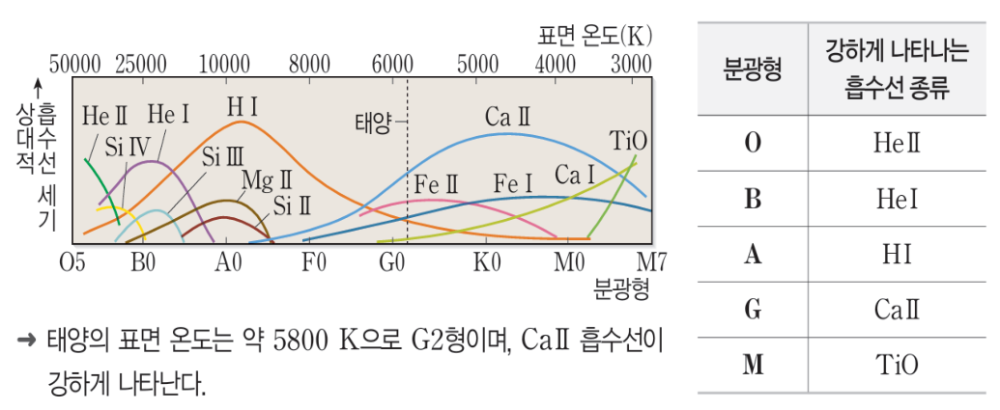
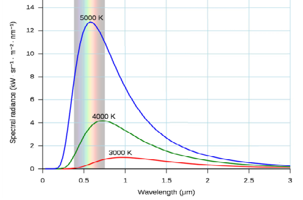
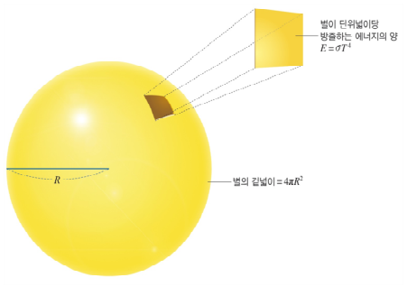
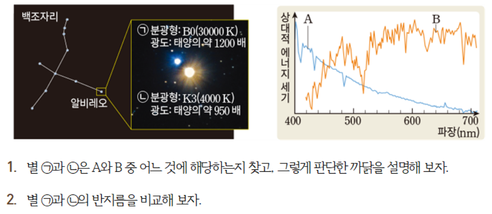

학습 목표 (Learning Objectives)
- ✓별의 흡수 스펙트럼 특징에 따라 분광형(O, B, A, F, G, K, M)을 결정하고 표면 온도와 연결할 수 있다.
- ✓흑체 복사의 법칙(빈의 변위 법칙, 슈테판-볼츠만 법칙)을 이용하여 별의 표면 온도, 광도, 반지름을 계산할 수 있다.
핵심 개념 체크리스트
학습을 마친 개념은 직접 체크해보세요!
2026 사대부고 고2 지구과학 자체 교재 원문 기반
동기 유발 · 생각해보기
수업 시작 전 핵심 질문
Q. 밤하늘의 별들은 빛으로 달려가도 수십~수천 년이 걸릴 만큼 아득히 먼 거리에 있다. 직접 가보거나 온도계를 꽂아볼 수도 없는 저 먼 별들의 표면 온도와 크기(반지름), 대기 성분을 천문학자들은 어떻게 정확히 알아낼까?


💡 먼저 스스로 이유를 추론해 본 뒤 버튼을 눌러 확인해보세요!
✨ 과학적 해설 및 모범 답안
별에서 오는 빛(별빛 스펙트럼과 파장별 에너지 분포)에 모든 정보가 담겨 있습니다! 별빛을 분광기로 분해하여 흡수선의 세기(분광형)와 최대 에너지를 방출하는 파장($\lambda_{\max}$)을 측정하면 표면 온도를 알 수 있고, 별의 밝기(광도)와 표면 온도를 결합하면 별의 반지름까지 정확히 계산할 수 있습니다.
핵심 개념 1
1. 별의 스펙트럼과 분광형 (Spectral Types)
(1) 연속·흡수·방출 스펙트럼과 하버드 분광 분류법 (O-B-A-F-G-K-M)
- •별의 흡수 스펙트럼 형성: 별의 고온 내부(광구)에서 방출된 연속 스펙트럼 빛이 별의 비교적 저온인 대기를 통과할 때, 대기 중 원소들이 고유한 파장의 빛을 흡수하여 검은 선이 나타나는 흡수 스펙트럼이 관측된다.
- •⭐ 주의! 별의 대기 성분은 거의 모든 별이 수소(약 75%)와 헬륨(약 24%)으로 비슷하지만, 별마다 흡수선의 종류와 세기가 다른 까닭은 별의 '표면 온도'에 따라 원소의 이온화 정도가 다르기 때문이다!
- •분광형 순서 (고온 ➔ 저온): O - B - A - F - G - K - M (각 분광형은 고온 $0 \sim$ 저온 $9$의 10단계로 세분화, 태양은 G2형 황색 별)
| 분광형 | 별의 색깔 | 표면 온도 (K) | 가장 강하게 나타나는 주요 흡수선 및 특징 |
|---|---|---|---|
| O 형 | 청색 | $28,000\text{ K}$ 이상 | • 이온화된 헬륨($\text{He II}$) 흡수선 강함 (온도가 가장 높음) |
| B 형 | 청백색 | $10,000\sim 28,000\text{ K}$ | • 중성 헬륨($\text{He I}$) 흡수선이 가장 강함 |
| A 형 | 백색 | $7,500\sim 10,000\text{ K}$ | • ⭐ 중성 수소($\text{H I}$) 흡수선이 가장 강하게 관측됨! (표면 온도 약 $10,000\text{ K}$) |
| F 형 | 황백색 | $6,000\sim 7,500\text{ K}$ | • 수소선 약화, 이온화된 칼슘($\text{Ca II}$) 등 금속 이온선 강화 |
| G 형 | 황색 | $5,000\sim 6,000\text{ K}$ | • 태양(G2형, 약 $5,800\text{ K}$) / 이온화된 칼슘($\text{Ca II}$) 및 중성 금속선 강함 |
| K 형 | 주황색 | $3,500\sim 5,000\text{ K}$ | • 중성 철($\text{Fe I}$), 칼슘 등 중성 금속 흡수선 강함 |
| M 형 | 적색 | $3,500\text{ K}$ 이하 | • 온도가 매우 낮아 산화 타이타늄($\text{TiO}$) 등 분자에 의한 흡수선 강함 |

" class="max-h-72 w-auto object-contain rounded-lg group-hover:scale-[1.02] transition duration-300 cursor-zoom-in" onclick="openLightbox(this.src, '교재 그림: <연속 스펙트럼, 흡수 스펙트럼, 방출 스펙트럼의 생성 원리>')" loading="lazy" />
" class="max-h-72 w-auto object-contain rounded-lg group-hover:scale-[1.02] transition duration-300 cursor-zoom-in" onclick="openLightbox(this.src, '교재 그림: <분광형(O~M)에 따른 흡수 스펙트럼과 표면 온도>')" loading="lazy" />
" class="max-h-72 w-auto object-contain rounded-lg group-hover:scale-[1.02] transition duration-300 cursor-zoom-in" onclick="openLightbox(this.src, '교재 그림: <표면 온도에 따른 원소별 흡수선의 상대적 세기 변화 그래프>')" loading="lazy" />
핵심 개념 2
2. 흑체 복사와 별의 광도 · 반지름 계산 (수능 필수 공식!)
(1) 플랑크 곡선, 빈의 변위 법칙, 슈테판-볼츠만 법칙 (교재 p.60~61)
- •플랑크 곡선의 핵심 특징: 별(흑체)의 표면 온도($T$)가 높을수록 모든 파장 영역에서 단위 면적당 방출하는 에너지가 많고, 최대 에너지를 방출하는 파장($\lambda_{\max}$)이 짧은 파장 쪽으로 이동한다.
- •① 빈의 변위 법칙: 최대 복사 에너지를 방출하는 파장($\lambda_{\max}$)은 표면 온도($T$)에 반비례한다.
$$\lambda_{\max} = \frac{a}{T} \implies \lambda_{\max} \propto \frac{1}{T} \quad (a \approx 2,898\text{ }\mu\text{m}\cdot\text{K})$$ - •② 슈테판-볼츠만 법칙: 별의 단위 시간 동안 단위 면적($1\text{ m}^2$)에서 방출하는 에너지양($E$, 복사 플럭스)은 오직 표면 온도의 네제곱($T^4$)에 비례한다! (별의 반지름과는 무관함!)
$$E = \sigma T^4 \implies E \propto T^4$$ - •③ 별의 광도($L$)와 반지름($R$) 공식: 별 전체 표면적($4\pi R^2$)에서 단위 시간 동안 방출하는 총 에너지양을 광도($L$)라 한다.
$$L = 4\pi R^2 \cdot \sigma T^4 \implies \mathbf{L \propto R^2 T^4}, \quad \mathbf{R \propto \frac{\sqrt{L}}{T^2}}$$ - •절대 등급($M$)과 광도($L$)의 관계: 절대 등급이 $5\text{등급}$ 작아질수록 광도($L$)는 $100\text{배}$ ($10^2\text{배}$) 밝아진다. ($1\text{등급}$ 차이는 약 $2.512\text{배}$)

" class="max-h-72 w-auto object-contain rounded-lg group-hover:scale-[1.02] transition duration-300 cursor-zoom-in" onclick="openLightbox(this.src, '교재 그림: <표면 온도에 따른 흑체의 플랑크 곡선과 빈의 변위 법칙>')" loading="lazy" />
" class="max-h-72 w-auto object-contain rounded-lg group-hover:scale-[1.02] transition duration-300 cursor-zoom-in" onclick="openLightbox(this.src, '교재 그림: <별의 표면적(4πR²)과 단위 면적당 방출 에너지(σT⁴)를 곱한 광도(L)>')" loading="lazy" />
" class="max-h-72 w-auto object-contain rounded-lg group-hover:scale-[1.02] transition duration-300 cursor-zoom-in" onclick="openLightbox(this.src, '교재 p.61 실전 연습: <별의 물리량(온도·광도·반지름·절대등급) 계산 표>')" loading="lazy" />
Interactive Checkpoints
클릭하면 교재 빈칸 정답과 해설이 나타납니다
단원 개념 적용하기 & 확인 문제
Q1
교재 p.59 확인: 수소(H I) 흡수선이 가장 강하게 나타나는 별의 분광형, 색깔, 대략적인 표면 온도는 얼마인가?
모범 답안 및 해설
수소 흡수선이 가장 강한 별은 A형 별이며, 색깔은 백색이고 표면 온도는 약 $10,000\text{ K}$입니다.
Q2
교재 p.61 별의 물리량 구하기 실전 문제: 별 A의 최대 에너지 방출 파장(λ_max)이 태양의 1/2배이고, 반지름(R)이 태양의 2배라면, 별 A의 (1) 표면 온도, (2) 단위 면적당 방출 에너지(E), (3) 광도(L)는 각각 태양의 몇 배인가?
모범 답안 및 해설
• (1) 표면 온도($T$): $\lambda_{\max} \propto 1/T$ 이므로 파장이 $1/2$배이면 표면 온도는 태양의 $2$배입니다.• (2) 단위 면적당 방출 에너지($E$): $E \propto T^4$ 이므로 $2^4 =$ $16$배입니다.
• (3) 광도($L$): $L \propto R^2 T^4 = 2^2 \times 2^4 = 4 \times 16 =$ $64$배입니다.